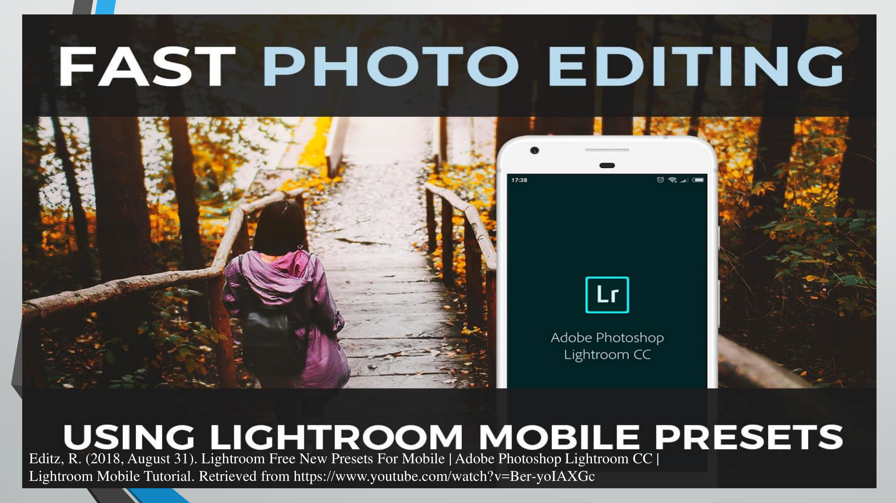
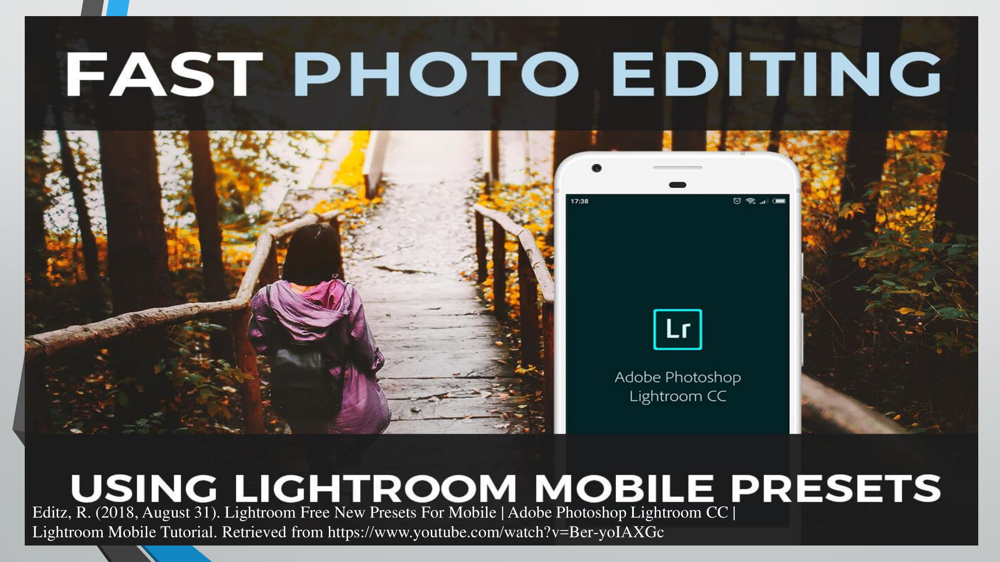
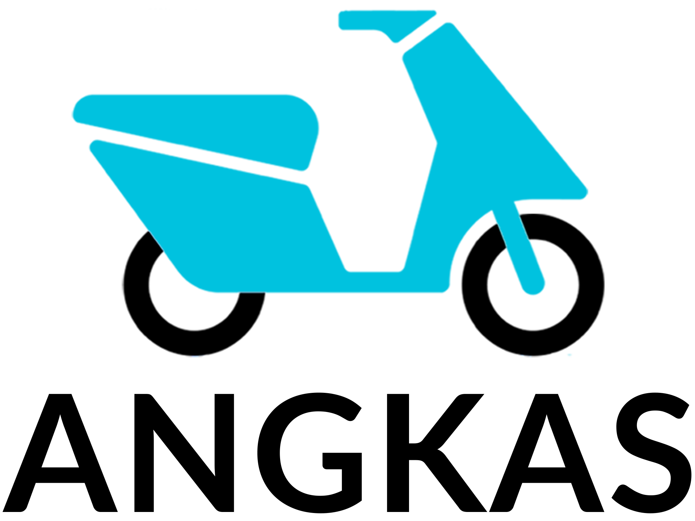
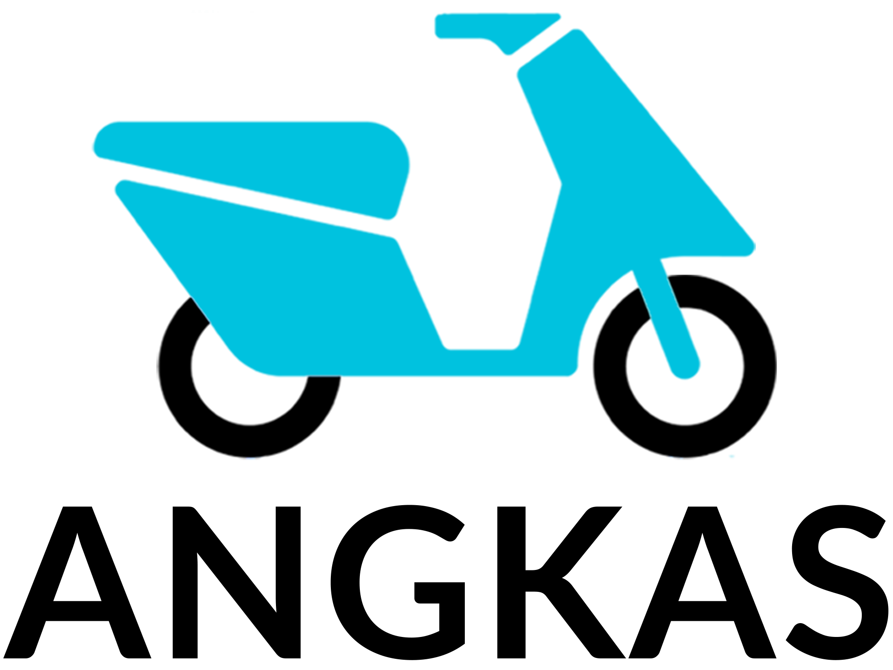
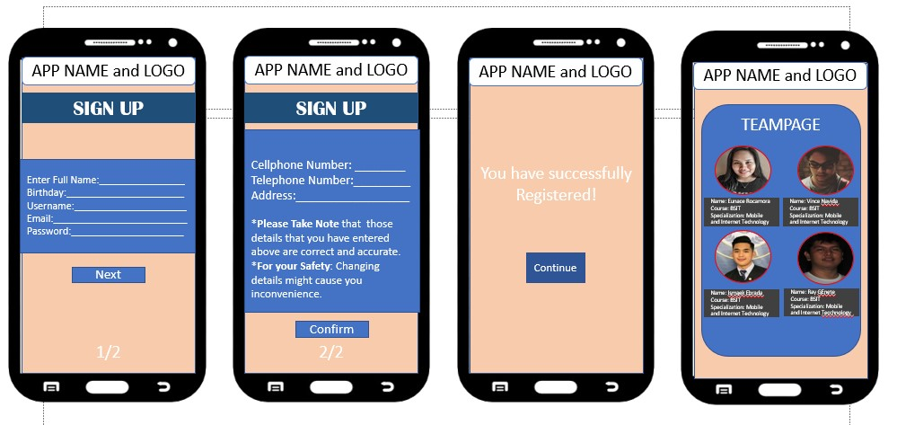
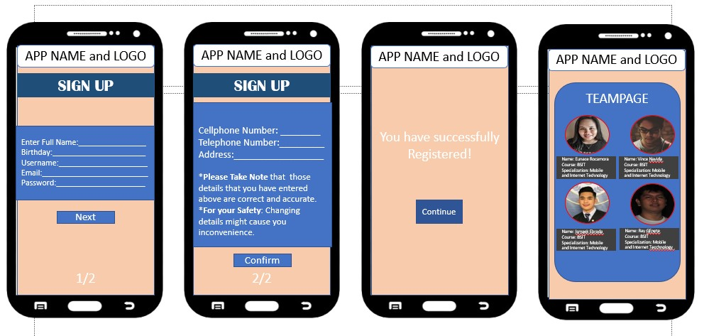

Activity 1
Introduction & Accounts Creation
Good day! My name is Eunace Rocamora and you can call me Nace or just Eunace. I live in Parañaque City. I graduated both junior and senior high school at Parañaque National High School – Main. I am one of the scholars of “Tatang” (Henry SY). I take the scholarship examination here in Asia Pacific College. SM Scholarship was not actually my first choice or the scholarship that I really want, it was just my second choice. The scholarship that I really want is the DOST Scholarship not just because of the incentives that I am going receive but the recognition when I graduated as a DOST Scholar. Unfortunately, I didn’t pass the DOST Scholarship examination. When the page of DOST posted the list of people who pass the examination, the moment that I reach the end part of list and I did not see my name written there. I really feel so down, I feel that I am not smart enough to qualify as a DOST Scholar. Few days after the result of DOST examination, I got an email from SM foundation that I will be taking the Scholarship examination on February 3,2018. I actually forgot that I pass my requirements to the website of SM Foundation. I got a thought that maybe DOST Scholarship was not really for me and there will be a better scholarship for me. I took the examination here in Asia Pacific College, and YES! I pass the examination and interview. One month after the examination, I got a call from Miss Ling and she said that I was chosen as one of the scholars who will give their testimonies. I was so shock and so happy. I realize that sometimes we do not get what we really want because God wants us to realize that we should not only focus on only one opportunity. I expect that Miss Arroyo will teach us how to make Graphical User Interface in our codes. I also expect that this class will be fun and exciting.
Activity 2
Tell Me Your Favorite Application
********************Slides in my Powerpoint Presentation of My Favorite Application********************
1. 2. 3. 4.5. 6. 7.
 8.
8. 
9.
 10.  11. 12.
10.  11. 12. 13. 14. 15. 16.
Activity 3
How would you design an interface for a 1000 floor elevator?

The design of the interface is like what is shown above, it only has 14 buttons, the 10 buttons are the numbers wherein the users/ people will push the button for their desired floor. The other 4 button are the “Emergency” if the user will push that button, the building admin will be notified right away that there is an emergency in a certain floor where the pushing button happens, the second button is the “Help” it is to give brief information on how the buttons are functioning. The third button is the “Cancel” button, if the user typed a wrong number, he/she can delete it right away. The last button is “Click to Cancel a Queued Floor” if the user changes his/her mind to go to the floor where he/she supposed to go, he/she can push the button then type the floor that he/she wants to cancel BUT it will notify everyone in the elevator that a certain floor will be cancelled so that if there is anyone will go to the floor that he/she will cancel will be alarmed so that it will be cancelled. If that happens, the user who wants to cancel a certain floor can cancel it by just pushing the “Cancel” button (the second function of the “Cancel” Button). This buttons or interface will be placed in different parts of the elevator, so that everyone can put their desired floor. If the user will enter the same time, it won’t affect the system because of the queueing system of data structures.

This is the big screen wherein the queued floors will be shown, actually it is big so that it can be seen by everyone inside the elevator.
 • Angkas
• Angkas
 4. 
4. 